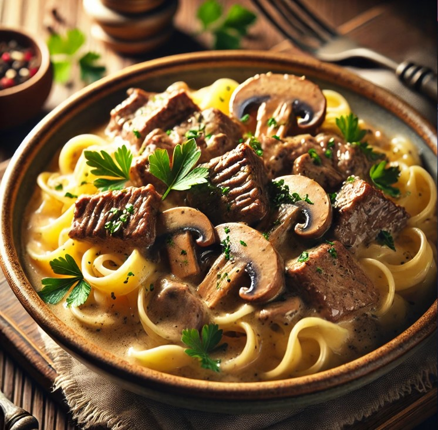

Beef Stroganoff Recipe
Home

Beef Stroganoff is a rich and creamy dish made with tender strips of beef sautéed with onions and mushrooms, all enveloped in a velvety sour cream sauce. This classic Russian dish is best served over egg noodles or rice for a comforting and satisfying meal.
Ingredients for Beef Stroganoff (Serves 4-6)
- 2 tablespoons butter
- 1 tablespoon olive oil
- 1 pound (450g) beef sirloin or tenderloin, cut into thin strips
- 1 large onion, finely chopped
- 2 cloves garlic, minced
- 8 oz (225g) mushrooms, sliced
- 1 teaspoon Dijon mustard
- 1 teaspoon paprika
- 1 cup (240ml) beef broth
- 1/2 cup (120ml) heavy cream or sour cream
- 1 tablespoon Worcestershire sauce
- Salt and black pepper, to taste
- Fresh parsley, for garnish
- Cooked egg noodles or rice, for serving
Steps to Cook Beef Stroganoff
Step 1: Sear the Beef
- Heat the olive oil and 1 tablespoon of butter in a large skillet over medium-high heat.
- Add the beef strips, season with salt and black pepper, and sear for 2-3 minutes until browned. Remove and set aside.
Step 2: Cook the Vegetables
- In the same skillet, melt the remaining butter and add the chopped onion.
- Sauté for 3-4 minutes until softened, then add the minced garlic and sliced mushrooms.
- Cook for another 5-7 minutes until the mushrooms are golden brown.
Step 3: Make the Sauce
- Stir in the Dijon mustard, paprika, and Worcestershire sauce.
- Pour in the beef broth and bring to a gentle simmer, letting the flavors meld for 5 minutes.
- Lower the heat and stir in the sour cream or heavy cream, mixing until smooth.
Step 4: Finish the Dish
- Return the seared beef to the skillet and stir to coat in the sauce.
- Simmer for another 2-3 minutes until the beef is heated through.
- Adjust seasoning with salt and black pepper as needed.
Step 5: Serve
- Serve hot over cooked egg noodles or rice.
- Garnish with fresh parsley for a burst of color and flavor.